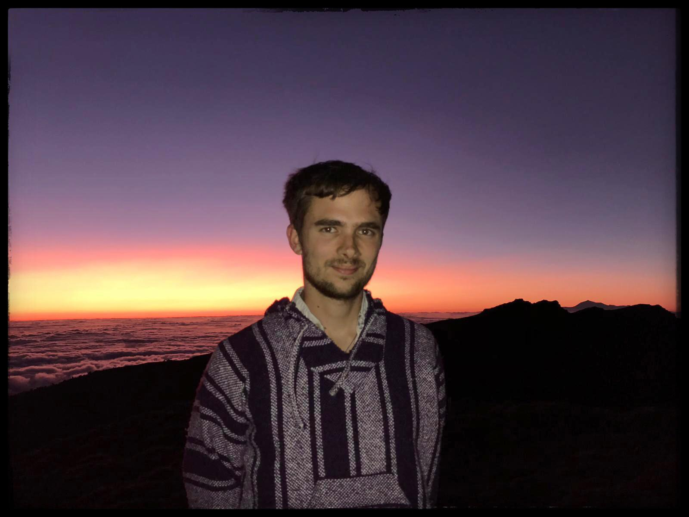
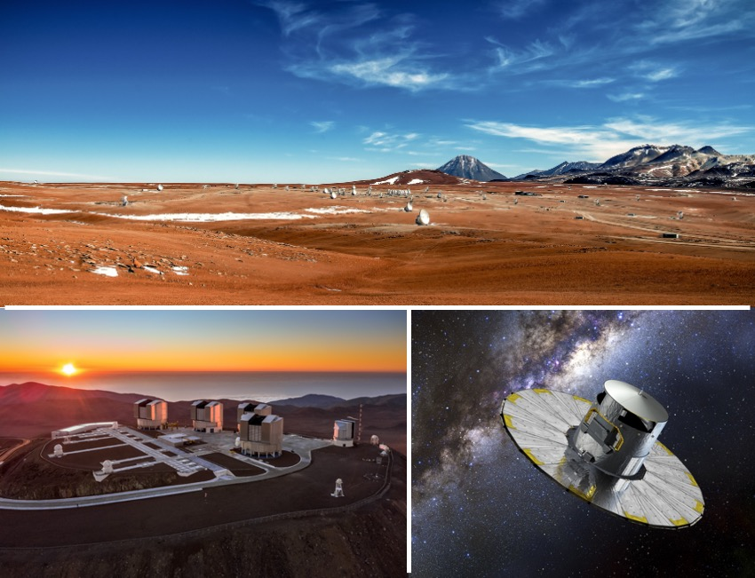
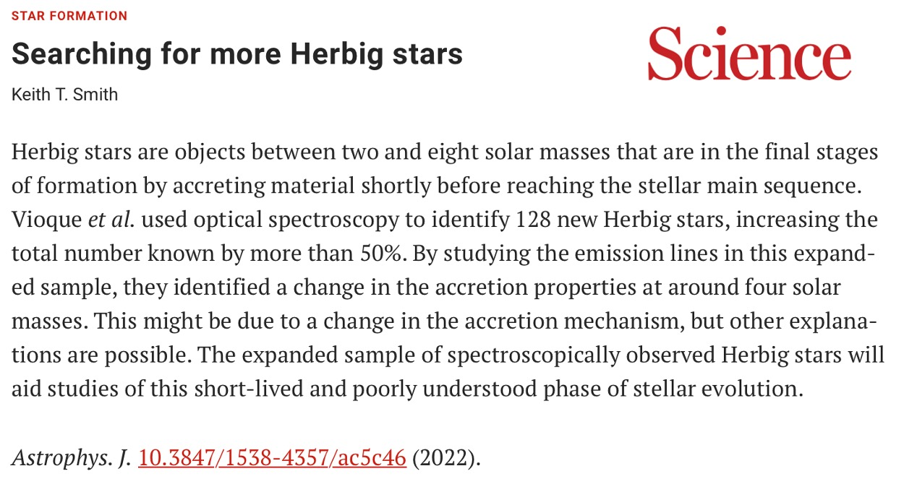
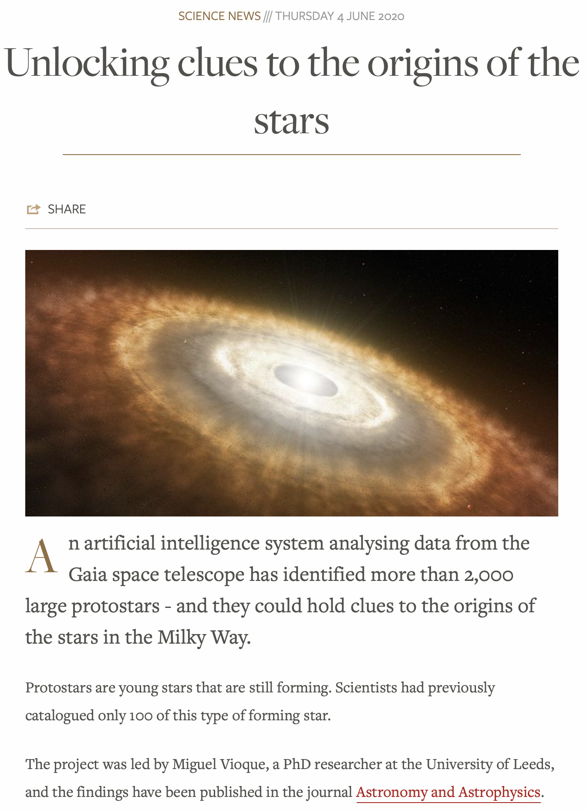

About me

Hello!, welcome to my personal
webpage. I am Miguel Vioque and since November 2020 I am working as an ALMA Fellow in Santiago, Chile. Born in Sevilla (Spain), I did my bachelor studies in Physics and Astronomy at the Universidad Complutense de Madrid (Spain) and at the University of Calgary (Canada). I did my master in Astrophysics and Cosmology at the Universidad Autónoma de Madrid (Spain). In October 2020 I received my PhD from the University of Leeds (UK) with a thesis titled "A census of Herbig Ae/Be stars. New candidates and analysis from a Gaia perspective" in which I studied and characterized the intermediate- to high-mass star formation with data from the Gaia mission and machine learning techniques. During my PhD, I had the privilege of doing an 18 month secondment at the European Space Astronomy Centre (ESAC) in Madrid and the adjacent Centro de Astrobiología.
My research interests focus on star and planet formation, with a particular emphasis on massive star formation and their protoplanetary disks. I study the accretion mechanisms of forming stars, and the evolution of their dust and gas-disks. This is key to understand how planets form in these disks. I am also interested in the clustering and environmental properties of forming stars. My technical expertise is varied, covering different techniques and a broad wavelength range. Mainly, I have worked with Gaia astrometry and photometry, IR photometry, optical spectroscopy, and mm-wavelength interferometry. I find it very useful to use machine learning techniques in my research, and I often apply them to Gaia data and other large-scale surveys.
Science keywords: star formation, Herbig Ae/Be, Intermediate-Mass T Tauri stars, pre-main sequence accretion, open clusters, Galactic structure, protoplanetary and debris disks, planet formation, variable stars, emission-line stars, Be stars.
Technical keywords: UV to mid-IR spectroscopy and photometry, astrometry, Gaia, ALMA, VLT, machine learning, statistics, big data, large-scale surveys, mm/sub-mm interferometry.
You can find my list of publications here.
Curriculum Vitae

You can download my complete CV here.
You can download my PhD thesis here.
Publications

Please find the link to my publication record in ADS here.
Refereed publications
- Arulanantham N., Gronke M., Fiorellino E., Gameiro J. F., Frasca A., Green J., Chang S. J.,
Claes R. A. B., Espaillat C., France K., Herczeg G. J., Manara C. F., Venuti L., Ábrahám P.,
Alexander R., Bouvier J., Campbell-White J., Eislöffel J., Fischer W. J., Kóspál A., Vioque M., Lyα Scattering Models Trace Accretion and Outflow Kinematics in T Tauri Systems, accepted for publication in ApJ
- Guzmán-Díaz J., Montesinos B., Mendigutía I., Kama M., Meeus G., Vioque M., Oudmaijer R.
D., Villaver E., Relation between metallicities and spectral energy distributions of Herbig Ae/Be
stars. A potential link with planet formation, accepted for publication in A&A
- Shoko J., Trager S. C., Dalton G. B., and et al. (with Vioque M.), The wide-field, multiplexed,
spectroscopic facility WEAVE: Survey design, overview, and simulated implementation, accepted for publication in MNRAS
- Iglesias D. P., Panić O., van den Ancker M., Petr-Gotzens M., Siess L., Vioque M., Pascucci
I., Oudmaijer R. D., Miley J., X-Shooter Survey of Young Intermediate Mass Stars - I. Stellar
Characterization and Disc Evolution, accepted for publication in MNRAS
- Oudmaijer R. D., Jones E. R. M., Vioque M., A census of post-AGB stars in Gaia DR3: Evidence for a substantial population of Galactic post-RGB stars, 2022, MNRAS Letters, 516, L61-L65
- Mendigutía I., Solano E., Vioque M., Balaguer-Nuñez L., Ribas A., Huélamo N., Rodrigo C., Gaia EDR3 comparative study of protoplanetary disk fractions in young stellar clusters, 2022, A&A, 664, A66
- Vioque M., Oudmaijer R. D., Wichittanakom C., Mendigutía I., Baines D., Panić O., Iglesias D., Miley J., Pérez-Martínez R., Identification and spectroscopic characterization of 128 new Herbig stars, 2022, ApJ, 930, 39
- Koumpia E., de Wit W.-J., Oudmaijer R. D., Frost A. J., Lumsden S., Caratti o Garatti A., Goodwin S. P., Stecklum B., Mendigutía I., Ilee J. D., Vioque M., The first interferometric survey in the K-band of massive YSOs. Hot dust, ionised gas, and binarity at au scales, 2021, A&A, 654, A109
- Marcos-Arenal P., Mendigutía I., Koumpia E., Oudmaijer R. D., Vioque M., Guzmán-Díaz J., Wichittanakom C., de Wit W. J., Montesinos B., Ilee J. D., K-band GRAVITY/VLTI interferometry of "extreme" Herbig Be stars. The size-luminosity relation revisited, 2021, A&A, 652, A68
- van den Ancker M. E., Gentile Fusillo N. P., Haworth T. J., Manara C. F., Miles-Páez P. A., Oudmaijer R. D., Panić O., Petit dit de la Roche D. J. M., Petr-Gotzens M. G., Vioque M., First detection of a disk free of volatile elements around a young A-type star: A possible sign of collisions between rocky planets, 2021, A&A, 651, L11
- Guzmán-Díaz J., Mendigutía I., Montesinos B., Oudmaijer R. D., Vioque M., Rodrigo C., Solano E., Meeus G., Marcos-Arenal P., Homogeneous study of Herbig Ae/Be stars from spectral energy distributions and Gaia EDR3, 2021, A&A, 650, A182
- Panić O., Haworth T. J., Petr-Gotzens M. G., Miley J., van den Ancker M., Vioque M., Siess L., Parker R., Clarke C. J., Kamp I., Kennedy G., Oudmaijer R. D., Pascucci I., Richards A. M. S., Ratzka T., Qi C., Planet formation in intermediate-separation binary systems, 2021, MNRAS, 501, 4317
- Vioque M., Oudmaijer R. D., Schreiner M., Mendigutía I., Baines D., Mowlavi N., Pérez-Martínez R., Catalogue of new Herbig Ae/Be and classical Be stars: A machine learning approach to Gaia DR2, 2020, A&A, 638, A21
- Wichittanakom C., Oudmaijer R. D., Fairlamb J. R., Mendigutía I., Vioque M., Ababakr K. M., The accretion rates and mechanisms of Herbig Ae/Be stars, 2020, MNRAS, 493, 234
- Vioque M., Oudmaijer R. D., Baines D., Mendigutía I., Pérez-Martínez R., Gaia DR2 study of Herbig Ae/Be stars, 2018, A&A, 620, A128
Non-refereed publications
- Mendigutía I., Solano E., Vioque M., Ribas A., Gaia EDR3 comparison of disk fractions from different spatial scales around young stellar clusters, 2021, Star Clusters: the Gaia Revolution. Online workshop, organised by the Institute of Cosmos Sciences (ICCUB-IEEC), id.6
- Vioque M., Wichittanakom C., Oudmaijer R. D., Schreiner M., Mendigutía I., Baines D., Mowlavi N., Pérez-Martínez R., Cataloguing new high-mass Pre-Main Sequence and Classical Be stars using Machine Learning and Gaia, 2020, Contributions to the XIV.0 Scientific Meeting (virtual) of the Spanish Astronomical Society, id. 192
- Vioque M., Oudmaijer R. D., Baines D., Pérez-Martínez R., New catalogue of intermediate mass Pre-Main Sequence objects in Gaia DR2 using Machine Learning, 2019, 53rd ESLAB Symposium: The Gaia Universe, id. 52
- Vioque M., Oudmaijer R. D., Baines D., Mendigutía I., Pérez-Martínez R., Gaia study on the formation of intermediate mass stars, 2019, Highlights on Spanish Astrophysics X, Proceedings of the XIII Scientific Meeting of the Spanish Astronomical Society, p. 437-437
- Vioque M., Oudmaijer R. D., Baines D., Herbig Ae/Be stars with TGAS parallaxes in the HR diagram, 2018, Astrometry and Astrophysics in the Gaia sky, Proceedings of the International Astronomical Union, Volume 330, pp. 277-278
- Vioque M., Oudmaijer R. D., Baines D., HR diagram of Herbig Ae/Be stars and their infrared excesses, 2017, Memorie della Societa Astronomica Italiana, v.88, p.824
Miscellaneous

IDEEA association
I am a member of the IDEEA association – Inclusion, Diversity, and Equity in European Astronomy. IDEEA is an open forum for discussion and activities on all topics related to ethics and inclusion in astronomy (and also outside astronomy). I encourage interested colleagues to contact me or another IDEEA member to participate in the association. Anyone is welcome to join and more information can be found here.
Historical overview of star formation and Herbig Ae/Be stars
I wrote this (very) brief overview of the history of star formation and Herbig Ae/Be stars for the introduction of my PhD thesis. Those interested in the history of science might find it worth-reading. I compiled literature information and nothing in it is original research.
Conference talks and seminars
- 2022 – Accretion/Ejection Processes in Star Formation: In Theory and in Practice (ESO, Santiago, Chile): Accretion on populations of intermediate and high-mass YSOs
- 2022 – Invited seminar (Department of Astronomy, University of Geneva): On the distribution of massive forming stars in the Galaxy
- 2022 – Invited seminar (Spanish Group of Massive Stars, online): The dearth of O-stars close to the ZAMS. Link with the measured accretion rates in high-mass YSOs
- 2022 – XV Reunión Científica de la Sociedad Española de Astronomía (La Laguna, Spain): A new perspective on the intermediate- to high-mass star formation
- 2022 – European Astronomical Society Annual Meeting (Valencia, Spain): Revisiting the intermediate- to high-mass star formation with machine learning
- 2022 – From Stars to Galaxies II. Connecting our Understanding of Star and Galaxy Formation (Chalmers University, Gothenburg, Sweden): Revisiting the intermediate- to high-mass star formation
- 2022 – Science seminar (Instituto de Astrofísica de Andalucía, Granada, Spain): Revisiting the intermediate- to high-mass star formation
- 2022 – Joint Observatories Kavli Science Forum (ESO, Santiago, Chile): Revisiting the intermediate- to high-mass star formation
- 2021 – Machine Learning in Astronomy, from classical to physics-informed (virtual workshop): Member of the discussion session and of the round table
- 2021 – Invited seminar (Núcleo Milenio for Planet Formation, Valparaíso, Chile): Finding new forming high-mass stars
- 2021 – Invited talk, Workshop en ciencia de datos (Universidad de Valparaíso, Valparaíso, Chile): Machine learning en astronomía y resolución de problemas con muchas incógnitas
- 2020 – Science seminar (University of Leeds, Leeds, UK): Catalogue of new high-mass Pre-Main Sequence and Classical Be stars. A Machine Learning approach to Gaia data
- 2020 – Science seminar (Universidad de Chile, Santiago, Chile): Catalogue of new high-mass Pre-Main Sequence and Classical Be stars. A Machine Learning approach to Gaia data
- 2020 – Science seminar (ESO, Santiago, Chile): Catalogue of new high-mass Pre-Main Sequence and Classical Be stars. A Machine Learning approach to Gaia DR2
- 2019 – Invited seminar (Sternberg Astronomical Institute, Moscow, Russia): Machine Learning techniques in Astronomy
- 2019 – The UX Ori Type Stars and Related Topics (St. Petersburg, Russia): New UX Ori type candidates detected using Gaia DR2 and Machine Learning
- 2019 – Science seminar (ESAC, Madrid, Spain): New Herbig Ae/Be and Classical Be candidates using Gaia and Machine Learning
- 2019 – Workshop: Artificial Intelligence in Astronomy (ESO, Garching, Germany): New catalogue of Pre-Main Sequence objects using AI
- 2019 – Gaia’s view of Pre-Main Sequence Evolution (Leeds, UK): New catalogue of Pre-Main Sequence objects using Gaia
- 2018 – Internal seminar (Centro de Astrobiología, Madrid, Spain): Machine Learning Algorithms and its applications to Astronomy
- 2018 – A Revolution in Stellar Physics with Gaia and Large Surveys (Warsaw, Poland): Gaia Study on the Formation of Intermediate Mass Stars
- 2018 – Spring Symposium: The 21st Century H-R Diagram: The Power of Precision Photometry (STScI, Baltimore, USA): Gaia Study on the Formation of Intermediate Mass Stars
- 2018 – Internal seminar (Centro de Astrobiología, Madrid, Spain): Gaia study of Herbig Ae/Be stars
- 2017 – Star Cluster Formation: Mapping the First Few Myrs (Madrid, Spain): Herbig Ae/Be stars with TGAS parallaxes in the HR diagram
- 2017 – Internal seminar (University of Leeds, Leeds, UK): Herbig Ae/Be stars with TGAS parallaxes in the HR diagram
Contact